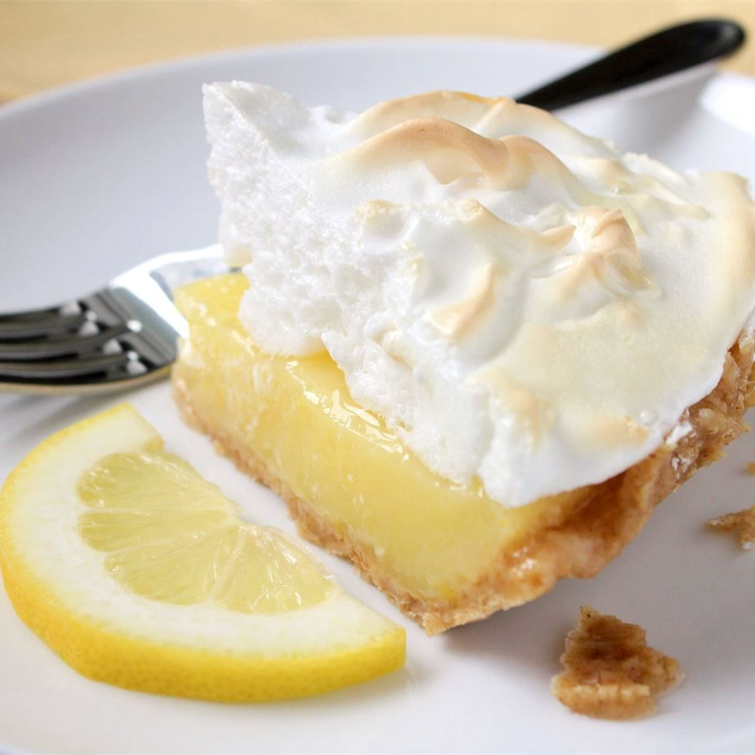

Lemon Pie

Description
A lemon meringue pie is a fantastic addition to any dessert table. This old-fashioned lemon meringue pie recipe has stood the test of time because it's easy to make, absolutely gorgeous, and totally irresistible.
Lemon meringue pie should be refrigerated. To prevent foodborne illness, never let it sit at room temperature for more than two hours. To store lemon meringue pie without messing up the meringue, place two toothpicks in the pie. Loosely cover it with storage wrap and store in the refrigerator for up to two days.
Ingredients
Filling
- 1 cup white sugar
- 2 tablespoons all-purpose flour
- 3 tablespoons cornstarch
- ¼ teaspoon salt
- 1 ½ cups water
- 2 lemons, juiced and zested
- 2 tablespoons butter
- 4 egg yolks, beaten
- 1 (9 inch) pie crust, baked
Meringue
- 4 egg whites
- 1/2 cup white sugar
Steps
- Preheat the oven to 325 degrees F (162 degrees C).
- To make the filling: Whisk 1 cup sugar, flour, cornstarch, and salt together in a medium saucepan; stir in water, lemon juice, and lemon zest. Cook over medium-high heat, stirring frequently, until mixture comes to a boil. Stir in butter.
- Place egg yolks in a small bowl and gradually whisk in 1/2 cup of hot sugar mixture. Whisk egg yolk mixture back into remaining sugar mixture. Bring to a boil and continue to cook while stirring constantly until thick. Remove from heat; pour filling into baked pastry shell.
- To make the meringue: Beat egg whites in a glass, metal, or ceramic bowl with an electric mixer until foamy. Gradually add sugar, continuing to beat until stiff peaks form. Spread meringue over pie filling, sealing the edges at the crust.
- Bake in preheated oven until meringue is golden brown, about 20 to 25 minutes.